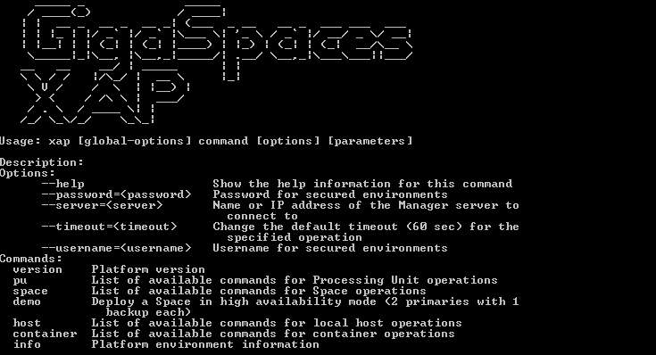
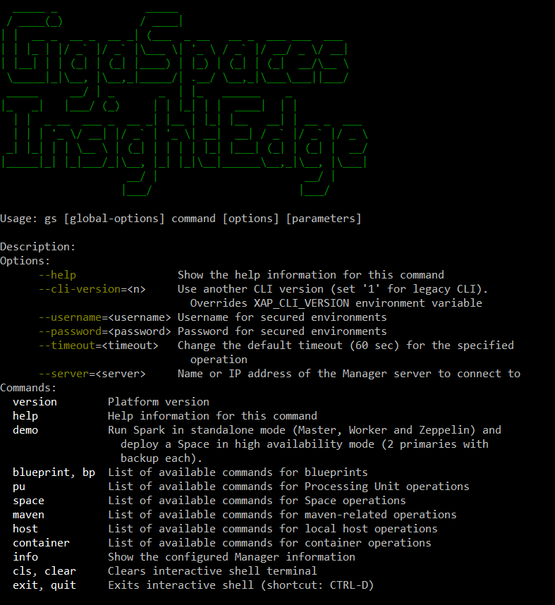
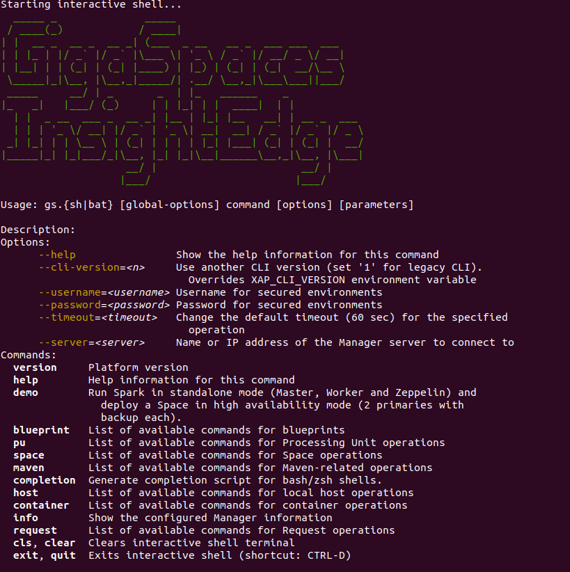

Users that are administering a xap script. Users that are administering insightedge CLI script, which contains all of the actions available with the xap script, plus additional options where relevant for administering
The image below shows the screen that is displayed when you run the xap script.
Use the gs script to invoke the CLI. If no arguments are specified, the usage instructions and available commands are displayed, as shown below:



If you are upgrading from a version prior to release 14.5, this is a new version of the CLI tool and uses a different syntax and command set. For more information, see Upgrading the CLI.
Use the --help command (or -h) to see the syntax of a specified CLI command, or a list of all available commands. The list of commands may vary depending on whether you are running the insightedge host run-agent --help contains all the actions available under xap host run-agent --help, plus additional options for administering the Spark master and worker components.
The CLI connects to the REST Manager API using the name or IP address of the Manager server. Configuration is applied from one of the following:
--server command line option.localhost as the server to connect to (if none of the above was applied).A CLI interactive shell is available for all platforms. To activate interactive mode, navigate to /bin and type gs to display the CLI help with command usage and the available options and commands. For each command you enter, the interactive shell provides guidance by:
Press Ctrl-D to exit the interactive shell.
Bash completion in the CLI is available for Linux and MacOS X users. After generating and activating the autocomplete feature (as explained below), navigate to xap [TAB][TAB] or insightedge [TAB][TAB]. This will complete the command sequence, or list all the available completions if there are multiple options.
In addition to the interactive shell, the CLI provides bash completion of all commands for Linux and MacOS X users.
After generating and activating the auto-completion (as explained below), do the following:
If you are using the CLI in a MacOS X environment, the autocomplete script will only work if bash version 4 is installed on your machine. After installing the required bash version, add the shell to the allowed shells and make it the default shell.
When using autocomplete, type ./xap [TAB][TAB] or ./insightedge [TAB][TAB].
You can add xap as an alias to the .bash_profile, in order to simplify using autocomplete.
The autocomplete script is located in <XAP-HOME>/tools/cli. There are two ways to install autocomplete.
<XAP-HOME>/tools/cli and source the completion script: source xap-autocomplete or source insightedge-autocomplete.<XAP-HOME>/bin and type: xap [TAB][TAB] or insightedge [TAB][TAB].When you leave the bash session, autocomplete stops working.
xap-autocomplete or insightedge-autocomplete file in a bash_completion.d folder. The folder may appear in the following locations: /etc/bash_completion.d /usr/local/etc/bash_completion.d ~/bash_completion.d (create one if absent).~/.bash_profile and add the following code: source /usr/local/etc/bash_completion.d/xap-autocompletesource ~/.bash_profile.<XAP-HOME>/bin and type: xap [TAB][TAB] or insightedge [TAB][TAB].alias xap = "cd <XAP-HOME>/bin && xap"If you want to generate a new autocomplete script (for example, if you changed the name of the xap or insightedge script) do so as follows:
Go to <XAP-HOME>/tools/cli and run the following command:
java -cp "../../lib/required/*:*" MAIN_COMMAND ALIAS
The MAIN_COMMAND value is different for each product and edition. Use one of the following:
org.gigaspaces.cli.commands.Autocompletecom.gigaspaces.cli.commands.Autocompleteorg.insightedge.cli.commands.Autocompletecom.insightedge.cli.commands.AutocompleteALIAS is optional; use it if you changed the name of the command.
After running java -cp "../../lib/required/*:*" MAIN_COMMAND ALIAS, the autocomplete script will appear in <XAP-HOME>/tools/cli.
The default 3.2 Bash shell of your Mac has basic Bash completion functionality. However, newer versions of Bash starting with 4.0 support a much more advanced type of completion, called programmable completion. Today, many completion scripts make use of new features that are not supported by Bash 3.2, and that also might depend on a third-party project called bash-completion.
To apply Bash completion on MacOS:
brew install bash.You can add .gs.as an alias of .gs.shto the .bash_profile, in order to simplify using the auto-complete feature.
Programmable completion allows defining command-specific completion logic. This enables users to auto-complete sub-commands, options, and other arguments of commands in a context-specific manner.
A completion specification defines the applicable completions for the argument tokens of a command.
To define a completion specification:
Run ./gs.sh completion with one of the following options:
| Options | Description | Example |
--stdout
|
Prints the completion code to standard output. | ./gs.sh completion --stdout
|
--target=<file>
|
Stores the completion code in the specified file. | ./gs.sh completion --target gs.completion
|
To load the gs completion code for bash into the current shell:
Enter this command:
$ source <(./gs.sh completion --stdout)OR
Use the --target option to create the completion code in a file, and then source it with a script containing these commands:
$ ./gs.sh completion --target gs.completion
$ source gs.completionTo load the gs completion for each new shell:
Source this script from the .bash_profile to be loaded on each session:
$ ./gs.sh completion --target /path/to/bash_completion.d/gs.completionYou can also leverage bash completion behavior by placing the script in the bash_completion.d folder.
To run a local Manager server and a web browser client, type xap host run-agent --auto or insightedge host run-agent --autogs host run-agent --auto.
To view a list of the running agents, type gs host list xap host list or insightedge host list